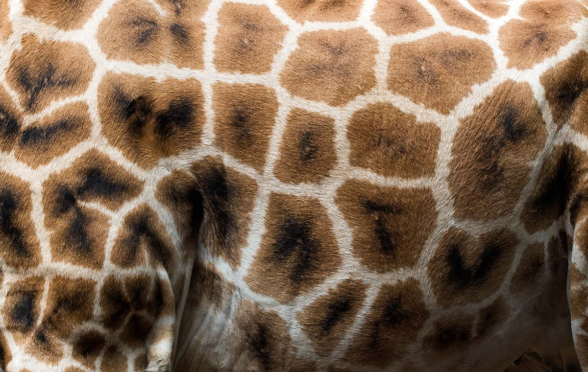
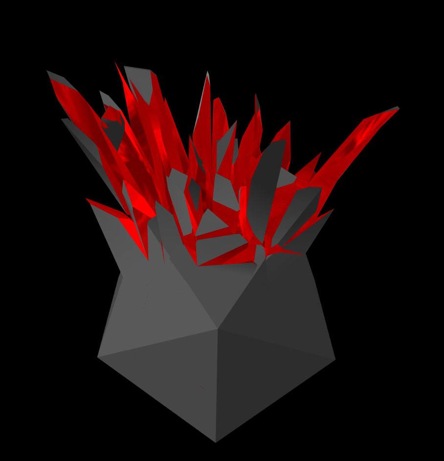

I love visual effects, and i love WebGL and shaders. So let's explode some things today! No icosahedrons were hurt during those experiments, so you can safely proceed reading and viewing!
[main image by crnacura?]So first of all, we need to break object in digital world. Calculate all those fragments shapes.
Easiest way to produce naturally looking fragments, is just to look at how... nature does them:
Giraffes have been using those fragments for thousands years.
In math we call them Voronoi Diagram (after Georgy Feodosevich Voronoy, mathematician).
And we are lucky to have a lot of algorithms to make those diagrams now. Not only on the surface, as giraffes do, but also spatial ones, that break down volumes. We can even partition four dimensional space. But let's stop at 3 dimensions for today's example. I will leave four dimensional explosions as an exercise for the reader.
So first of all, i prepared some models (you could use Blender/Cinema4D for that, or your own Voronoi algorithm):
That looks beautiful by itself, isn't it?❤️
On the other hand, that was a lot of data to load, so i managed to compress it with glTF file format with Draco compression.
I decided to use THREE.js for the rendering, as it has a lot of useful built-in stuff. Like: i wanted reflective materials, and some utilities to work with my fragments, and lightning.
Of course with that many fragments it is not wise to put calculations on CPU, so it's better to animate that in shaders, i.e. on GPU. There is some really simple vertex shader, to put all those fragments apart:
position = rotate(position); position += position + direction*progress;
Where direction is the explosion direction, and progress, is animation progress. I would calculate direction on CPU and put it in geometry attributes.
Then i used some THREE.js materials and CubeTexture to color all the surfaces, and that's it!
During the development, i accidentally typed the wrong variable in one of my shaders, and actually got pretty decent result:
So you never know where you end up if you try to do something new!
I hope you liked these demos and short insight into how it works. And this story will inspire you to do more cool things too! Let me know what you think about it, and what ideas you have!